54 nieuwe basisbeelden · 12 personen en rollen · 18 plaatsen · 24 voorwerpen Acht themapakketten combineren deze beelden met de bestaande actiewoorden.
1. Personen en rollen
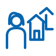
de buurvrouw
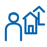
de buurmande vriendde vriendinde verkoper
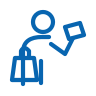
de klantde docentde cursistde collegade arts
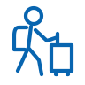
de reiziger
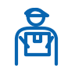
de bezorger
2. Plaatsen
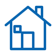
het huis
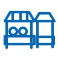
de markt
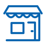
de winkel
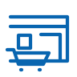
de supermarkt
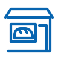
de bakkerijhet restauranthet café
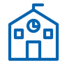
de schoolde bibliotheekhet kantoorhet ziekenhuisde apotheek
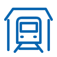
het station
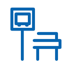
de bushalte
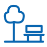
het park
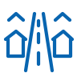
de straatde sporthalhet gemeentehuis
3. Voorwerpen
de sleutelde tasde telefoon
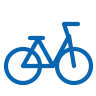
de fietsde portemonneehet geld
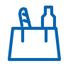
de boodschappentas
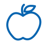
de appelhet brood
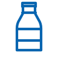
de fles
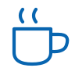
de bekerhet bordhet boek
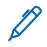
de pen
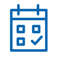
de agendade computerhet kaartje
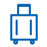
de koffer
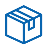
het pakket
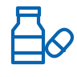
het medicijn
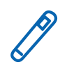
de thermometerde bal
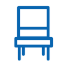
de stoel
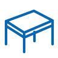
de tafel
4. De acht themapakketten
Kennismaken en ontmoeten
de buurvrouw · de buurman · de vriend · de vriendin · de docent · de cursist · het huis · de school · het park · de telefoon · de agenda · het boek · de pen · de stoel · de tafel · de beker · begroeten · spreken · luisteren · vragen · geven · bedanken
Verhaal: A ontmoet iemand voor het eerst. Vertel hoe het contact begint en wat jullie over elkaar ontdekken.
Samen: B kiest iets uit het verhaal en stelt daar een vraag over. A antwoordt; wissel daarna van rol.
22 begrippen · basisbeelden en actiewoorden hergebruikt
Boodschappen en de markt
de verkoper · de klant · de vriend · de markt · de winkel · de supermarkt · de bakkerij · het geld · de portemonnee · de boodschappentas · de appel · het brood · de fles · de tas · kiezen · kopen · betalen · zoeken · dragen · geven
Verhaal: A gaat boodschappen doen. Vertel wat je zoekt, wat je kiest en hoe het bezoek verloopt.
Samen: B is de verkoper en biedt een andere mogelijkheid aan. A kiest en legt uit; wissel daarna van rol.
20 begrippen · basisbeelden en actiewoorden hergebruikt
Wonen en de buurt
de buurvrouw · de buurman · de vriend · de vriendin · de bezorger · het huis · de straat · het park · de winkel · de sleutel · het pakket · de stoel · de tafel · de fiets · de tas · de telefoon · openen · sluiten · schoonmaken · repareren · helpen · tillen
Verhaal: A vertelt over een dag thuis of in de buurt. Geef een bewoner, een plek en een gebeurtenis een rol.
Samen: B is een buurman of buurvrouw en reageert met een eigen idee. A vertelt wat er daardoor verder gebeurt; wissel daarna.
22 begrippen · basisbeelden en actiewoorden hergebruikt
Eten en drinken
de vriend · de vriendin · de klant · de verkoper · het huis · het restaurant · het café · de bakkerij · de supermarkt · de appel · het brood · de fles · de beker · het bord · de tafel · de stoel · de boodschappentas · koken · bakken · snijden · eten · drinken · afwassen
Verhaal: A bereidt een maaltijd of een bezoek aan een eetgelegenheid voor. Vertel wie er komt en wat er gebeurt.
Samen: B vertelt een voorkeur. A past iets aan het plan aan; wissel daarna van rol.
23 begrippen · basisbeelden en actiewoorden hergebruikt
Onderweg en reizen
de reiziger · de vriend · de bezorger · het station · de bushalte · de straat · het park · de markt · het kaartje · de koffer · de tas · de telefoon · de fiets · de portemonnee · de agenda · de fles · lopen · fietsen · autorijden · instappen · uitstappen · zoeken
Verhaal: A gaat ergens naartoe. Vertel waar de reis begint, hoe je reist en wat je onderweg meemaakt.
Samen: B vraagt naar een stap in de reis. A verduidelijkt die stap; wissel daarna van rol.
22 begrippen · basisbeelden en actiewoorden hergebruikt
Gezondheid en verzorging
de arts · de vriend · de vriendin · de buurvrouw · het huis · het ziekenhuis · de apotheek · het park · het medicijn · de thermometer · de agenda · de telefoon · de fles · de beker · de stoel · de tas · bellen · vragen · luisteren · uitleggen · helpen · zich wassen
Verhaal: A vertelt over een bezoek aan een zorgverlener of over hulp bij de dagelijkse verzorging. Gebruik een verzonnen situatie.
Samen: B vraagt welke informatie of praktische hulp A nodig heeft. A maakt dat duidelijk; wissel daarna van rol.
22 begrippen · basisbeelden en actiewoorden hergebruikt
School en leren
de docent · de cursist · de vriend · de vriendin · de school · de bibliotheek · het huis · het park · het boek · de pen · de agenda · de computer · de tas · de stoel · de tafel · de telefoon · lezen · schrijven · luisteren · vragen · uitleggen · tekenen
Verhaal: A vertelt wat iemand leert of oefent. Beschrijf de taak en wat al lukt.
Samen: B vraagt hoe een stap werkt. A legt die uit met een voorbeeld; wissel daarna van rol.
22 begrippen · basisbeelden en actiewoorden hergebruikt
Werk en afspraken
de collega · de bezorger · de verkoper · de klant · het kantoor · de winkel · het huis · het station · de computer · de agenda · de telefoon · het pakket · de pen · de tafel · de stoel · de tas · typen · meten · bezorgen · bouwen · repareren · bellen
Verhaal: A vertelt over een werktaak en een afspraak die daarbij hoort. Kies zelf wat er moet gebeuren.
Samen: B is een collega en doet een voorstel. Spreek samen af wie wat doet; wissel daarna van rol.
22 begrippen · basisbeelden en actiewoorden hergebruikt